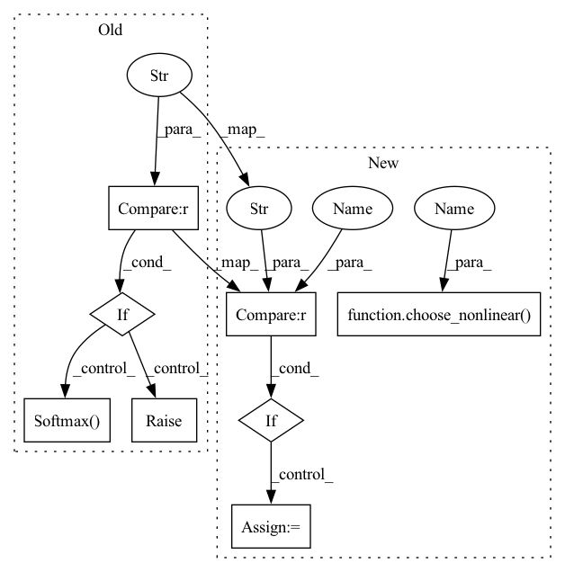

Pattern ID :41619
Before Change
if mask_nonlinear == "sigmoid":
self.mask_nonlinear2d = nn.Sigmoid()
elif mask_nonlinear == "softmax" :
self.mask_nonlinear2d = nn.Softmax(dim=1)
else:
raise NotImplementedError("")
self.take_log, self.take_db = take_log, take_db
self.eps = epsAfter Change
kwargs = {}
if mask_nonlinear == "softmax" :
kwargs["dim"] = 1
self.mask_nonlinear2d = choose_nonlinear(mask_nonlinear , **kwargs)
self.take_log, self.take_db = take_log, take_db
self.eps = eps
In pattern: SUPERPATTERN
Frequency: 3
Non-data size: 8
Instances Fragment ID: 116919089
Project Name: tky823/dnn-based_source_separation
Commit Name: 6333394de0e49d076fa5e5f6d06d7f145ec8bcec
Time: 2021-11-22
Author: delta9guitar97@gmail.com
File Name: src/models/danet.py
M Class Name: DANet
N Class Name: DANet
M Method Name: __init__(11)
N Method Name: __init__(11)
M Parent Class: nn.Module
N Parent Class: nn.Module
M File Name: src/models/danet.py
N File Name: src/models/danet.py
M Start Line: 48
M End Line: 55
N Start Line: 49
N End Line: 54
Before Change
if mask_nonilnear == "sigmoid":
self.mask_nonlinear = nn.Sigmoid()
elif mask_nonilnear == "softmax" :
self.mask_nonlinear = nn.Softmax(dim=1)
else:
raise ValueError("Only supports sigmoid and softmax, but given {}.".format(mask_nonilnear))
self._reset_parameters()
After Change
if mask_nonilnear == "sigmoid":
kwargs = {}
self.mask_nonlinear = nn.Sigmoid()
elif mask_nonilnear == "softmax" :
kwargs = {
"dim": 1
}
self.mask_nonlinear = choose_nonlinear( mask_nonilnear, **kwargs)
self._reset_parameters()
def _reset_parameters(self): Fragment ID: 116919090
Project Name: tky823/dnn-based_source_separation
Commit Name: dde2365c3685653c33be298429c28543495869b2
Time: 2021-12-12
Author: delta9guitar97@gmail.com
File Name: src/models/tasnet.py
M Class Name: Separator
N Class Name: Separator
M Method Name: __init__(10)
N Method Name: __init__(10)
M Parent Class: nn.Module
N Parent Class: nn.Module
M File Name: src/models/tasnet.py
N File Name: src/models/tasnet.py
M Start Line: 340
M End Line: 343
N Start Line: 349
N End Line: 356
Before Change
if output_nonlinear is not None:
if output_nonlinear == "tanh":
end_net.append(nn.Tanh())
elif output_nonlinear == "softmax" :
end_net.append(nn.Softmax(dim=1) )
else:
raise ValueError("Not support {}".format(output_nonlinear))
self.end_net = nn.Sequential(*end_net)
After Change
end_net.append(nn.Conv1d(hidden_channels, out_channels, kernel_size=1, stride=1, bias=False))
if output_nonlinear is not None:
if output_nonlinear == "softmax" :
kwargs = {
"dim": 1
}
else:
kwargs = {}
module = choose_nonlinear( output_nonlinear, **kwargs)
end_net.append(module)
self.end_net = nn.Sequential(*end_net)
Fragment ID: 116919091
Project Name: tky823/dnn-based_source_separation
Commit Name: 10282099ca12b94e9b9870841d4de0252506baab
Time: 2021-12-05
Author: delta9guitar97@gmail.com
File Name: src/models/wavenet.py
M Class Name: WaveNet
N Class Name: WaveNet
M Method Name: __init__(19)
N Method Name: __init__(19)
M Parent Class: nn.Module
N Parent Class: nn.Module
M File Name: src/models/wavenet.py
N File Name: src/models/wavenet.py
M Start Line: 24
M End Line: 39
N Start Line: 33
N End Line: 41